荒崎海岸
| 日付 | 2026年7月19日（日） |
|---|---|
| メンバー | 家族（妻、長女・15歳、長男・13歳） |
| アクセス | 車 |
海の日連休は北アルプスの白馬岳へ行く予定だったが、天候不順により延期にした。
しかし、天気予報は割と好転し、特に南の方は晴れの予報。
せっかくなのでこの機会に海に行くことにする。
真鶴半島に行きたかったが、3連休中は混みそうなので、
いつものように、あまり混まない荒崎海岸に向かう。
1年振りの荒崎海岸。今年も来ました。
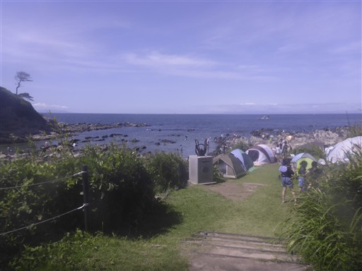
早速シュノーケリング開始。ソラスズメダイがお出迎え。
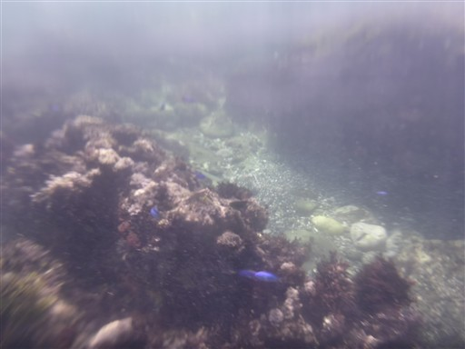
タカノハダイ。毎年見る魚だ。
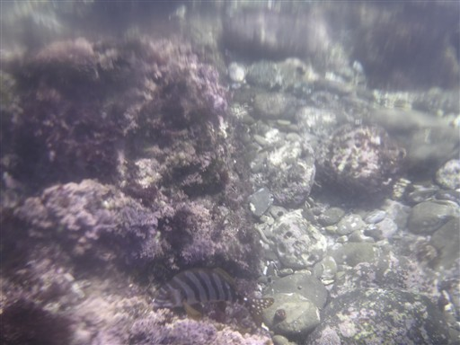
キュウセン。
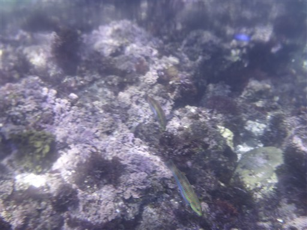
写真では伝わりにくいが、本日はいつもより水の透明度が高い。
深い場所でも海底がくっきり見えるし、遠くも見渡せる。
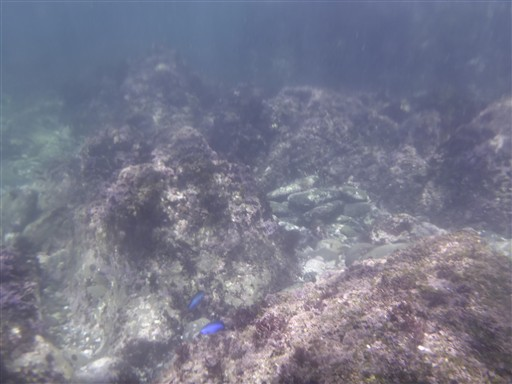
しばらく泳いだらハゼやカニを探す。
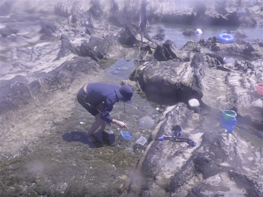
捕まえたハゼ。
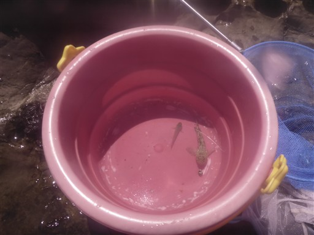
本日は海日和。朝は富士山が見えていたが、その後雲の中に隠れてしまった。
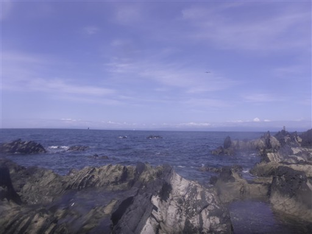
やたら深いタイドプール。2mくらいか？
中に入ってみると、ちゃんと魚がいる。
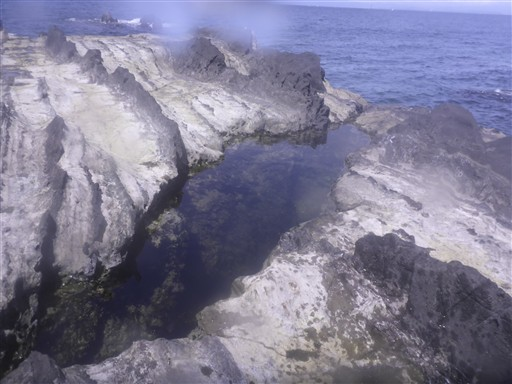
昼食を取ったら少し昼寝。そのあと展望台に向かう。
こんなところに知られざるビーチがある。
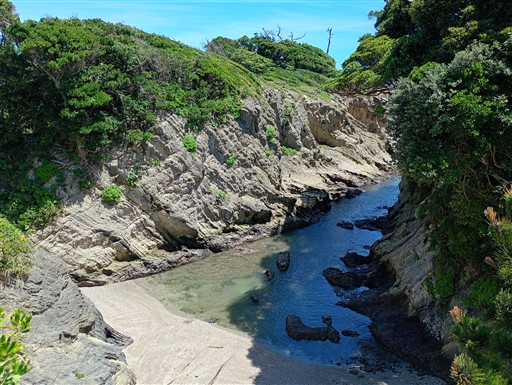
森の中の遊歩道を歩く。
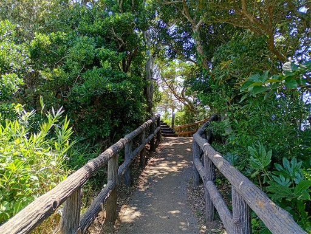
展望台からの景色。草がすごくきれいだが、定期的に手入れをしている人がいるのだろうか？
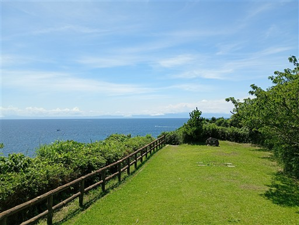
「荒崎」の石碑。
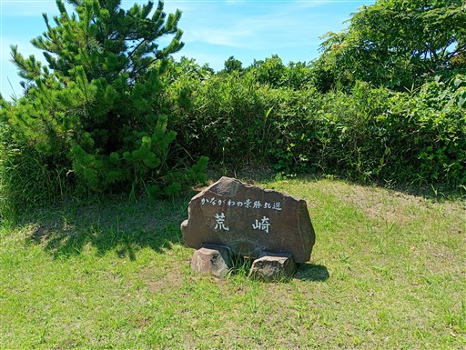
荒崎海岸を見下ろす。干潮でだいぶ水が減っている。
この後1時間ほど泳いで撤収する。
久しぶりに家族4人で出かけられた。本日は海がきれいで多くの魚が観察できたが、
見慣れた魚ばかりだったので、来年こそは真鶴半島に行ってみたい。
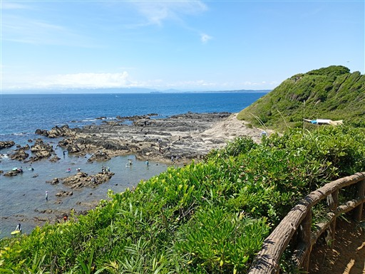
他の記録